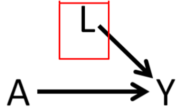
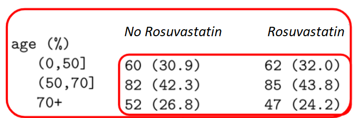
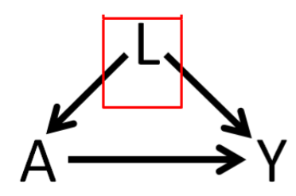
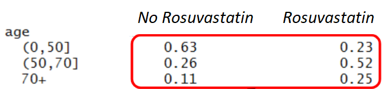
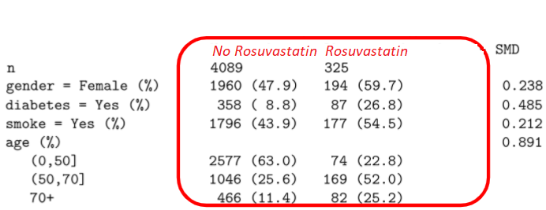
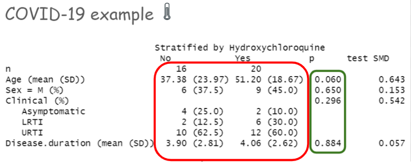
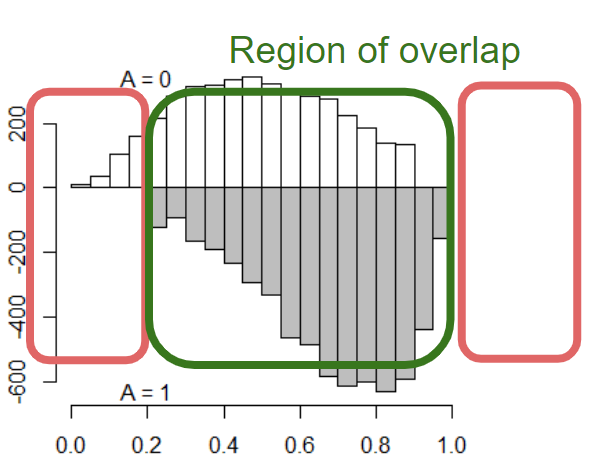

Chapter 2 Balance and Overlap
2.1 Balance
Table 1 in any RCT paper is very important to assess the balance of the baseline characteristics between the two treatment arms.
Balance in RCT:
|  |  |
Compare the proportions in each age categories by eye-balling in making an evaluation.
In absence of randomization:
|  |  |
2.1.1 Measures of Balance
To compare baseline characteristics between the two treatment groups, we use
- t-test (for continuous variables) and
- chi-square test (for categorical variables)
Today we will introduce a new concept, known as standardized mean differences (SMD) that can be also used to compare baseline characteristics between the two treatment groups.
2.1.1.1 SMD
- For continuous confounders:
- \(SDM_{continuous} = \frac{\bar{L}_{Rosuvastatin} - \bar{L}_{No Rosuvastatin}}{\sqrt{\frac{s^2_{Rosuvastatin} + s^2_{No Rosuvastatin}}{2}}}\)
- For binary confounders:
- \(SDM_{binary} = \frac{\hat{p}_{Rosuvastatin} - \hat{p}_{No Rosuvastatin}}{\sqrt{\frac{ \hat{p}_{Rosuvastatin} \times (1 - \hat{p}_{Rosuvastatin}) + \hat{p}_{No Rosuvastatin} \times (1 - \hat{p}_{No Rosuvastatin}) }{2}}}\)

Generally, \(0.1\) is used as a cut-point. But some suggest more liberal cut-points. More on that later.
COVID example from Gautret et al. (2020)
p-value vs. SMD

- Statistical tests are affected by sample size
- t-test
- McNemar tests
- Wilcoxon rank test
- Balance of what?
- statistical tests make inference about balance at the population level
- but we are really interested in balance at the sample level
2.2 Adjustment
2.2.1 Why adjust?
In absence of randomization, treatment effect estimate ATE = \(E[Y|A=1] - E[Y|A=0]\) includes
- Treatment effect
- Systematic differences in 2 groups (‘confounding’)
- Doctors may prescribe tx more to frail and older age patients.
- In here, \(L\) = age is a confounder.
In absence of randomization, if age is a known confounder, conditioning can solve the problem:
| Causal effect for young (\(<50\)) | \(E[Y|A=1, L =\) younger age\(]\) - \(E[Y|A=0, L =\) younger age\(]\) |
| Causal effect for old (\(\ge 50\)) | \(E[Y|A=1, L =\) older age\(]\) - \(E[Y|A=0, L =\) older age\(]\) |
Conditional exchangeability; only works if \(L\) is measured.
2.2.2 Adjustment Methods
Adjustment of imbalance could mean
- exact matching (Rubin 1973)
- stratification, restriction
| When L includes a large number of covariates, matching method would result in a small sample size. |
Regression and machine learning methods are popular adjustment methods. Below is a list of adjustment methods that uses different combinations of exposure and outcome modelling.
| Method | Exposure model \((\color{green}{\text{A}} \sim ...)\) | Outcome Model \((Y \sim ...)\) |
|---|---|---|
| Regression (Gauss 1821 \(\dagger\)) | No \(\color{green}{\text{A}}\) modelling | Yes \((Y \sim \color{green}{\text{A}}+\color{red}{\text{L}})\) |
| Propensity score matching (Rosenbaum and Rubin 1983) | Yes \((\color{green}{\text{A}} \sim \color{red}{\text{L}})\) | Crude comparison on matched data \((Y \sim \color{green}{\text{A}})\) |
| Propensity score Weighting (Rosenbaum and Rubin 1983) | Yes \((\color{green}{\text{A}} \sim \color{red}{\text{L}})\) | Crude comparison on weighted data \((Y \sim \color{green}{\text{A}})\) |
| Propensity score double adjustment | Yes \((\color{green}{\text{A}} \sim \color{red}{\text{L}})\) | Yes \((Y \sim \color{green}{\text{A}}+ \color{red}{\text{L}})\) |
| Decision tree-based method (Breiman et al. 1984) | No \(\color{green}{\text{A}}\) modelling | Yes \((Y \sim \color{green}{\text{A}}+\color{red}{\text{L}})\) |
| G-Computation (J. Robins 1986) | No \(\color{green}{\text{A}}\) modelling | Yes \((Y \sim \color{green}{\text{A=1 vs. 0}}+\color{red}{\text{L}})\) |
| Random Forest (Ho 1995) | No \(\color{green}{\text{A}}\) modelling | Yes \((Y \sim \color{green}{\text{A}}+\color{red}{\text{L}})\) |
| Double robust (J. M. Robins and Rotnitzky 2001), (Van Der Laan and Rubin 2006) (augmented weighted, or TMLE), potentially using machine learning | Yes \((\color{green}{\text{A}} \sim \color{red}{\text{L}})\) | Yes \((Y \sim \color{green}{\text{A}}+ \color{red}{\text{L}})\) |
\(\dagger\) (Stanton 2001)
2.3 Lack of overlap
- “Lack of complete overlap” happens if there is a baseline covariate space where there are exposed patients, but no control or vice versa.
- Region of ‘no overlap’ is an inherent limitation of the data.

- Regression adjustment usually do not offer any solution to this.
- Consequently, inference is not generalizable beyond the region of overlap.